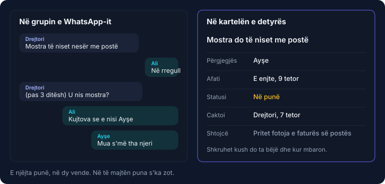
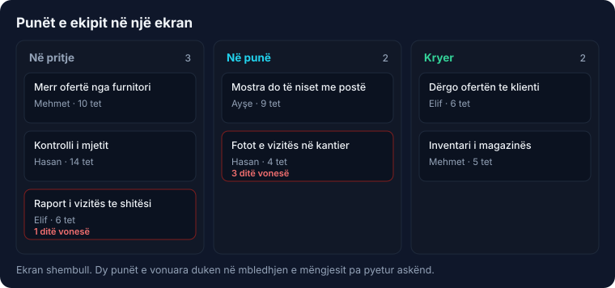

Pse mbeten punët pa u ndjekur? Për çfarë shërben programi për menaxhimin e detyrave
Në një kompani, shumica e punëve jepen me gojë. Thuhen në korridor, kërkohen me telefon, shkruhen në grupin e WhatsApp-it. Një pjesë e tyre bëhen, një pjesë harrohen, dhe për disa të tjera pas tri ditësh pyetet „ç'u bë me atë punë?“. Ky artikull shpjegon pse punët mbeten pa u ndjekur dhe si e zgjidh këtë programi për menaxhimin e detyrave.

Ku humbet puna?
Grupi i WhatsApp-it duket i volitshëm për të dhënë punë, sepse aty janë të gjithë. Por në grup bien njëqind mesazhe në ditë. Mesazhi i mëngjesit „ta nisim atë mostrën me postë“ deri në drekë ka mbetur shumë lart në ekran. Secili nga tre vetat që e panë mendon se po merret tjetri me të.
Te puna e dhënë me gojë gjendja është edhe më e paqartë. Ai që e dha e mban mend që e tha. Ai që e mori nuk e mban mend deri kur kërkohej, ose nuk e ka dëgjuar fare. Lind një debat ku të dy kanë të drejtë, dhe ndërsa flitet se kush çfarë tha, puna ende s'është bërë.

Ndodh edhe e kundërta: të njëjtën punë e bëjnë dy veta njëherësh. Klientit i shkojnë dy oferta të ndryshme, furnitori merret dy herë në telefon. Kush sheh nga jashtë krijon përshtypjen e një kompanie të çrregullt.
Dita e drejtuesit shkon duke ndjekur punët
Kur punët nuk janë të shkruara diku, ndjekja i mbetet kujtesës së drejtuesit. Gjëja e parë në mëngjes, i pyet të gjithë një nga një: u nis oferta, u çua mjeti në kontroll teknik, erdhën fotot nga kantieri? Një pjesë e mirë e ditës shkon kështu.
Ky rregull ka edhe një pasojë tjetër. Kur drejtuesi harron të pyesë, harrohet edhe puna. Me kohë ekipi mëson se puna për të cilën nuk pyetet nuk është urgjente.
E njëjta zbrazëti del kur dikush largohet nga puna ose merr lejen vjetore. Cilat punë ka mbi vete e di vetëm telefoni dhe koka e tij. Ai që e zëvendëson fillon nga zeroja, dhe premtimet e dhëna klientit humbasin rrugës.
Çfarë ndryshon programi për menaxhimin e detyrave?
Bën një gjë të thjeshtë: çdo punë e kthen në një regjistrim. Në të ka katër gjëra: cila është puna, kush do ta bëjë, deri kur, në ç'gjendje është tani. Kur këto katër të dhëna janë të shkruara, shumica e problemeve të mësipërme zhduken vetvetiu.
Ai që e merr punën sheh listën e vet në telefon. Është e qartë çfarë duhet të bëjë sot dhe cila punë është vonuar. Kur e mbaron, e shënon si të kryer dhe, po të duhet, shton një foto ose dokument.
Ai që e jep punën nuk është i detyruar të pyesë. Hap ekranin dhe sheh kush çfarë ka, cila ka mbaruar, cila është vonuar. Mbledhja e mëngjesit shkurtohet; flitet vetëm për punët që kanë ngecur.

Këtu hyjnë edhe punët që përsëriten. Inventari mujor, vizita javore te shitësit, kontrolli teknik i mjetit, ripërtëritja e kontratës përcaktohen një herë dhe, kur vjen dita, bien vetë në listën e personit përkatës. Mbajtja mend e tyre nuk është më detyrë e askujt.
Për ekipet që punojnë në terren
Në punë si servisi, montimi dhe shitja në terren, ekipi e kalon pjesën më të madhe të ditës jashtë. Për të mësuar në mbrëmje sa nga punët e ndara me gojë në mëngjes janë bërë, prisni që të kthehen të gjithë.
Kur detyrat shkojnë në telefon, ekipi në terren e ka me vete punën e radhës, adresën dhe shënimin për klientin. Kur e mbaron punën, bën foton dhe, po të duhet, merr nënshkrimin e klientit. Zyra e sheh në të njëjtin çast. Kur telefonon klienti, mund t'i thoni „ekipi ynë u nis para gjysmë ore, puna u krye“.
A do ta shohë ekipi si kontroll?
Reagimi i parë shpesh është ky dhe duhet marrë seriozisht. Nëse sistemin e përdorni vetëm për të parë kush është vonuar, ekipi shumë shpejt gjen mënyrën ta shënojë punën si të kryer dhe të vazhdojë më tej.
Qasja që funksionon është që sistemi së pari t'ia lehtësojë punën punonjësit. T'i shohë punët e veta në një listë, të shpëtojë nga debati „mua s'më tha njeri“, t'i dorëzojë punët me rregull kur del me leje — këto janë lehtësi edhe për punonjësin. Në vendosjet tona, javën e parë synojmë vetëm këtë. Raportet dhe ndjekja e vonesave vijnë më pas.
Si fillohet?
Filloni me një ekip të vetëm dhe me një rregull të vetëm: puna quhet e dhënë vetëm nëse është shkruar në sistem. Edhe puna e thënë me gojë ose e shkruar në grup futet më pas në sistem. Nëse ky rregull mban dy javë, pjesa tjetër është e lehtë.
Në fillim mos u merrni me hollësi si kategoria, prioriteti apo etiketat. Mjaftojnë puna, personi dhe data. Sa më shumë mësohet ekipi, aq më shumë shtoni fushat që ju duhen.
Zgjedhja e mjeteve është e madhe. Ka aplikacione të lehta që ndjekin vetëm detyrat, dhe ka sisteme që punojnë bashkë me regjistrimet e klientëve dhe ofertave. Nëse detyrat tuaja lidhen me një klient, porosi ose projekt, duhet të shikoni llojin e dytë (shih Çfarë është menaxhimi i detyrave në CRM?). Përndryshe të njëjtin informacion e shkruani në dy vende.
Pyetje të shpeshta
A duhet ta lëmë krejt WhatsApp-in?
Jo. Mund të vazhdoni ta përdorni për komunikim. E vetmja gjë që ndryshon është se puna vetë nuk mbetet në mesazh, por regjistrohet.
A nuk është e tepërt për një kompani me dhjetë veta?
Dhjetë veta do të thotë tridhjetë a dyzet punë të ndryshme në ditë. Një njeri gjithsesi nuk i mban dot të gjitha në mend. Në këtë madhësi mjafton e tepron një mjet i thjeshtë.
Po nëse ekipi nuk e përdor?
Nëse nuk e përdor drejtuesi, nuk e përdor as ekipi. Kur punët jepen nga sistemi dhe gjendja ndiqet nga sistemi, brenda pak javësh krijohet shprehia.
Shërbimet tona të lidhura: aplikacion për menaxhimin e detyrave dhe ekipet në terren, këshillim për transformimin dixhital.
Shabllon për ndjekjen e detyrave
Kush, çfarë pune, deri kur; puna e vonuar e kuqe, përmbledhje për çdo person. Shabllon Excel falas.
Shiko shabllonetLe t'i bëjmë të dukshme punët e ekipit tuaj
Le të shohim bashkë se si jepen dhe si ndiqen punët sot.
Le të flasim për projektin tuaj